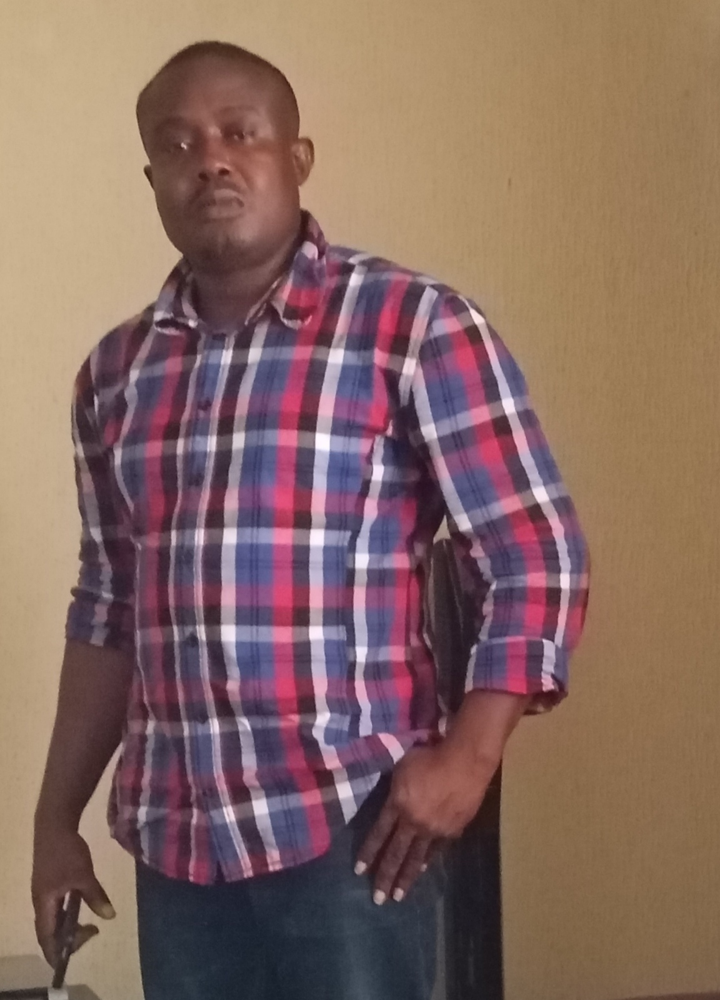

Oluchukwu Offor | WDD 130
Hi, my name is Oluchukwu Offor, I am a Nigerian and resident in Calabar, Cross River, State. I am a father of 3 lovely kids. I have two beautiful daughters and a handsome boy. My daughters' names are: Chimamanda and Victory, while my Son's name is: Dominion. My beautiful wife's name is Gloria. We are indigene of Nsukwa in Aniocha South LGA of Delta State. I am employed and I currently work as a sales personnel. I intend to change to my career to Web Development in the nearest future. I am committed to this objective and will invest all available resource to ensured it is acheived as desired.